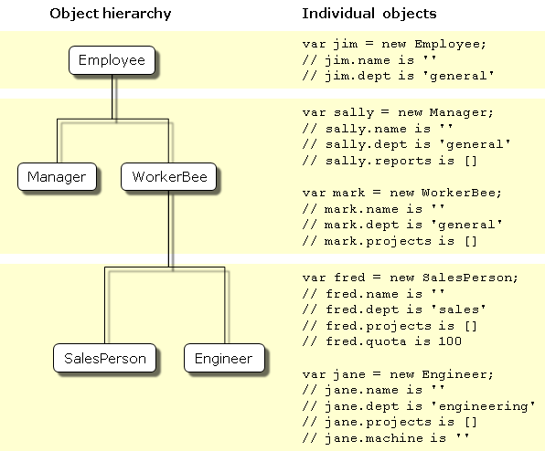
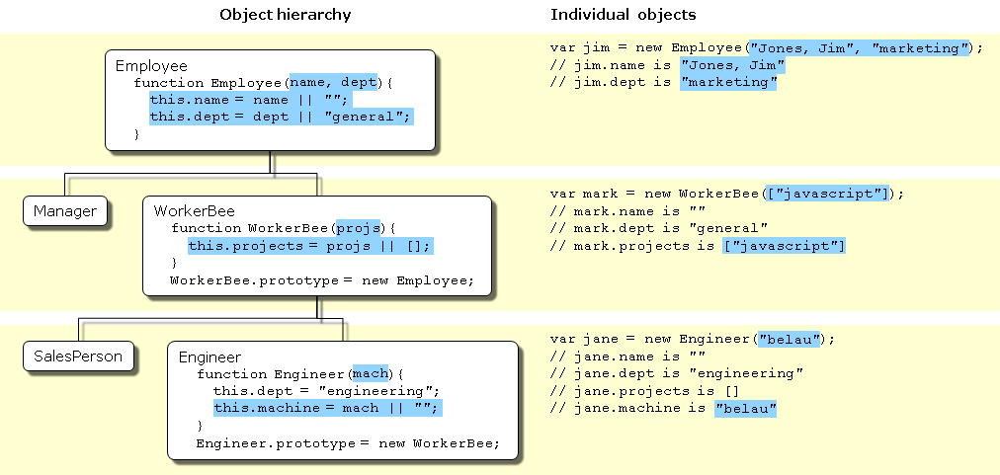

正是由于这一根本的区别，其如何创建对象的层级结构以及对象的属性与属性值是如何继承的并不是那么清晰
基于类的面向对象语言，比如 Java 和 C++，是构建在两个不同实体的概念之上的：即类和实例
类是抽象的事物，而不是其所描述的全部对象中的任何特定的个体
例如， Victoria 可以是 Employee 类的一个实例，表示一个特定的雇员个体
实例具有和其父类完全一致的属性
基于原型的语言（如 JavaScript）并不存在这种区别：它只有对象。基于原型的语言具有所谓原型对象（prototypical object）的概念
原型对象可以作为一个模板，新对象可以从中获得原始的属性
任何对象都可以指定其自身的属性，既可以是创建时也可以在运行时创建
任何对象都可以作为另一个对象的原型（prototype），从而允许后者共享前者的属性
在基于类的语言中，需要专门的类定义符（class definition）定义类
在定义类时，允许定义特殊的方法，称为构造器（constructor），来创建该类的实例
在构造器方法中，可以指定实例的属性的初始值以及一些其他的操作
您可以通过将new 操作符和构造器方法结合来创建类的实例
JavaScript 也遵循类似的模型，但却不同于基于类的语言
在 JavaScript 中你只需要定义构造函数来创建具有一组特定的初始属性和属性值的对象
任何 JavaScript 函数都可以用作构造器
也可以使用 new 操作符和构造函数来创建一个新对象
基于类的语言是通过对类的定义中构建类的层级结构的
在类定义中，可以指定新的类是一个现存的类的子类
子类将继承父类的全部属性，并可以添加新的属性或者修改继承的属性
假设 Employee 类只有 name 和 dept 属性，而 Manager 是 Employee 的子类并添加了 reports 属性
这时，Manager 类的实例将具有所有三个属性：name，dept 和 reports
JavaScript 通过将构造器函数与原型对象相关联的方式来实现继承
这样，您可以创建完全一样的 Employee — Manager 示例，不过需要使用略微不同的术语
首先，定义 Employee 构造器函数，指定 name 和 dept 属性
然后，定义 Manager 构造器函数，指定 reports 属性
最后，将一个新的 Employee 对象赋值给 Manager 构造器函数的 prototype 属性
这样，当创建一个新的 Manager 对象时，它将从 Employee 对象中继承 name and dept 属性
在基于类的语言中，通常在编译时创建类，然后在编译时或者运行时对类的实例进行实例化
一旦定义了类，无法对类的属性进行更改
在 JavaScript 中，允许运行时添加或者移除任何对象的属性
为一个对象中添加了一个属性，而这个对象又作为其它对象的原型，则以该对象作为原型的所有其它对象也将获得该属性
| 基于类的（Java） | 基于原型的（JavaScript） |
| 类和实例是不同的事物 | 所有对象均为实例 |
| 通过类定义来定义类；通过构造器方法来实例化类 | 通过构造器函数来定义和创建一组对象 |
| 通过 new 操作符创建单个对象 | 相同 |
| 通过类定义来定义现存类的子类，从而构建对象的层级结构 | 指定一个对象作为原型并且与构造函数一起构建对象的层级结构 |
| 遵循类链继承属性 | 遵循原型链继承属性 |
| 类定义指定类的所有实例的所有属性。无法在运行时动态添加属性 | 构造器函数或原型指定初始的属性集。允许动态地向单个的对象或者整个对象集中添加或移除属性 |

一个简单的对象层级
它还重载了 dept 属性值为 "sales"，表明所有的销售人员都属于同一部门
很可能想定义构造器，以允许您在创建对象时指定属性值

Employee 对象定义
Employee 的 Java 和 JavaScript 的定义是非常类似的
唯一的不同是在 Java 中需要指定每个属性的类型，而在 JavaScript 中则不需要，同时 Java 的类必须创建一个显式的构造器方法
public class Employee { public String name; public String dept; public Employee () { this.name = ""; this.dept = "geberal"; } }Manager 和 WorkerBee 的定义表示在如何指定继承链中上一层对象时，两者存在不同点
在 JavaScript 中，您会添加一个原型实例作为构造器函数prototype 属性的值，而这一动作可以在构造器函数定义后的任意时刻执行
而在 Java 中，则需要在类定义中指定父类，且不能在类定义之外改变父类
public class Menger extends Employee { public Employee[] reports; public Manger () { this.reports = new Employee[0]; } } public class WorkerBee extends Employee { public String[] projects; public WorkerBee () { this.projects = new String[0]; } }在对Engineer 和 SalesPerson 定义时，创建了继承自 WorkerBee 的对象，该对象会进而继承自Employee
这些对象会具有在这个链之上的所有对象的属性
它们在定义时，又重载了继承的 dept 属性值，赋予新的属性值
public class SalesPerson extends WorkerBee { public double quota; public SalesPerson () { this.dept = "sales"; this.quota = 100.0; } } public class Engineer extends WorkerBee { public String machine; public Engineer () { this.dept = "engineering"; this.machine = ""; } }Note: 术语 实例（instance）在基于类的语言中具有特定的技术含义
在这些语言中，实例是指类的个体成员，与类有着根本性的不同
在 JavaScript 中，“实例”并不具有这种技术含义，因为 JavaScript 中不存在类和实例之间的这种差异
然而，在谈论 JavaScript 时，“实例”可以非正式地用于表示用特定的构造器函数创建的对象
所以，在这个例子中，你可以非正式地称jane 是 Engineer 的一个实例
与之类似，尽管术语父（parent），子（child），祖先（ancestor），和后代（descendant）在 JavaScript 中并没有正式的含义，您可以非正式地使用这些术语用于指代原型链中处于更高层次或者更低层次的对象
对象如何从原型链中的其它对象中继承属性，以及在运行时添加属性
通过如下语句创建一个 mark 对象作为 WorkerBee 的实例
这个过程不会显式的将 mark所继承的原型链中的属性值作为本地变量存放在 mark 对象中
mark 对象从 mark.__proto__ 中保存的原型对象中继承了 name 和 dept 属性的值
并由 WorkerBee 构造器函数为 projects 属性设置了本地值
这就是 JavaScript 中的属性和属性值的继承
由于这些构造器不支持为实例设置特定的值，所以这些属性值仅仅是创建自 WorkerBee 的所有对象所共享的默认值
在 JavaScript 中，您可以在运行时为任何对象添加属性，而不必受限于构造器函数提供的属性
mark 对象就有了 bonus 属性，而其它 WorkerBee 则没有该属性
如果您向某个构造器函数的原型对象中添加新的属性，那么该属性将添加到从这个原型中继承属性的所有对象的中
只要 JavaScript 执行了该语句，则 mark 对象也将具有 specialty 属性，其值为 "none"

构造器函数都不允许在创建新的实例时指定属性值
使用 JavaScript 定义过程使用了一种设置默认值的特殊惯用法
JavaScript 的逻辑或操作符（||）会对第一个参数进行判断
如果该参数值运算后结果为真，则操作符返回该值
否则，操作符返回第二个参数的值
因此，这行代码首先检查 name 是否是对name 属性有效的值
否则，设置 this.name 的值为空的字符串
如果调用构造器函数时，指定了可以转换为 false 的参数（比如 0 （零）和空字符串（""）），结果可能出乎调用者意料
将使用默认值（译者注：而不是指定的参数值 0 和 ""）
当创建对象的实例时，您可以为本地定义的属性指定值
由上面对类的定义，您无法为诸如 name 这样的继承属性指定初始值
如果想在JavaScript中为继承的属性指定初始值，您需要在构造器函数中添加更多的代码
构造器函数已经能够创建一个普通对象，然后为新对象指定本地的属性和属性值
还可以通过直接调用原型链上的更高层次对象的构造器函数，让构造器添加更多的属性

构造器为该新对象创建了一个名为 base 的新属性，并指向 WorkerBee 的构造器
这使得 WorkerBee 构造器成为 Engineer 对象的一个方法
base 属性的名称并没有什么特殊性，我们可以使用任何其他合法的名称来代替；base 仅仅是为了贴近它的用意
构造器调用 base 方法，将传递给该构造器的参数中的两个，作为参数传递给 base 方法，同时还传递一个字符串参数 "engineering"
显式地在构造器中使用 "engineering" 表明所有 Engineer 对象继承的 dept 属性具有相同的值，且该值重载了继承自 Employee 的值
因为 base 是 Engineer 的一个方法，在调用 base 时，JavaScript 将在步骤 1 中创建的对象绑定给 this 关键字
这样，WorkerBee 函数接着将 "Doe, Jane" 和 "engineering" 参数传递给 Employee 构造器函数
当从 Employee 构造器函数返回时，WorkerBee 函数用剩下的参数设置 projects 属性
在 Engineer 的构造器中调用了 WorkerBee 的构造器，也就为 Engineer 对象设置好了继承关系
调用 WorkerBee 构造器确保了Engineer 对象以所有在构造器中所指定的属性被调用
如果后续在 Employee 或者 WorkerBee 原型中添加了属性，那些属性不会被 Engineer 对象继承
对象 jane 不会继承 specialty 属性
现在 jane 对象的 specialty 属性为 "none" 了
使用 javascript 的 call() 方法相对明了一些，因为无需 base 方法了
描述了 JavaScript 构造器和原型如何提供层级结构和继承的实现
在访问一个对象的属性时，JavaScript 将执行下面的步骤
以上步骤的结果依赖于您是如何定义的
在创建 Employee 对象的任意实例时，该实例的 name 属性将获得一个本地值（空的字符串）
这就意味着在创建一个新的 Employee 对象作为 WorkerBee 的原型时，WorkerBee.prototype 的 name 属性将具有一个本地值
因此，当 JavaScript 查找 amy 对象（WorkerBee 的实例）的 name 属性时，JavaScript 将找到 WorkerBee.prototype 中的本地值
因此，也就不会继续在原型链中向上找到 Employee.prototype 了
如果想在运行时修改一个对象的属性值并且希望该值被所有该对象的后代所继承，您就不能在该对象的构造器函数中定义该属性
而应该将该属性添加到该对象所关联的原型中如果希望对象的属性具有默认值，并且希望在运行时修改这些默认值，应该在对象的原型中设置这些属性，而不是在构造器函数中
JavaScript 的属性查找机制首先在对象自身的属性中查找，如果指定的属性名称没有找到，将在对象的特殊属性 __proto__ 中查找
这个过程是递归的；被称为“在原型链中查找”
特殊的 __proto__ 属性是在构建对象时设置的；设置为构造器的 prototype 属性的值
所以表达式 new Foo() 将创建一个对象，其 __proto__ == Foo.prototype
因而，修改 Foo.prototype 的属性，将改变所有通过 new Foo() 创建的对象的属性的查找
每个对象都有一个 __proto__ 对象属性（除了 Object）；每个函数都有一个 prototype 对象属性
因此，通过“原型继承（prototype inheritance）”，对象与其它对象之间形成关系
通过比较对象的 __proto__ 属性和函数的 prototype 属性可以检测对象的继承关系
JavaScript 提供了便捷方法：instanceof 操作符可以用来将一个对象和一个函数做检测，如果对象继承自函数的原型，则该操作符返回真
创建构造器时，在构造器中设置全局信息要小心
基于该定义，在创建新的 Employee 时，构造器为其分配了序列中的下一个标识符
然后递增全局的标识符计数器
无论什么目的，在每一次创建 Employee 对象时，idCounter 都将被递增一次
如果创建所描述的整个 Employee 层级结构，每次设置原型的时候，Employee 构造器都将被调用一次
上面省略掉的定义中包含 base 属性而且调用了原型链中高于它们的构造器
即便在现在这个情况下，在 mac 对象创建时，mac.id 为 5
依赖于应用程序，计数器额外的递增可能有问题，也可能没问题
某些面向对象语言支持多重继承。也就是说，对象可以从无关的多个父对象中继承属性和属性值
也就是说可以有多个爹
JavaScript 不支持多重继承
也就是说只有一个爹
因为对象只有一个原型与之关联，所以 JavaScript 无法动态地从多个原型链中继承
这一点造成了多重继承的假象
使用本章前面所属的 WorkerBee 的定义